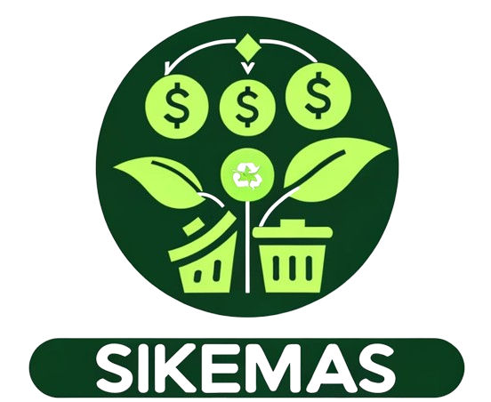

Tentang SIKEMAS

"Sikemas" adalah sistem keuangan manajemen sampah yang bertujuan untuk memfasilitasi pertemuan antara pemilik sampah, bank sampah, dan investor untuk mendukung pendanaan dan pengelolaan sampah secara berkelanjutan. Konsep ini memungkinkan pemilik sampah untuk menjual sampah mereka kepada bank sampah, yang kemudian akan memproses dan mendaur ulang sampah tersebut. Sebagai imbalan, pemilik sampah dapat menerima kompensasi berupa uang atau hadiah lainnya.
Bank sampah berperan sebagai perantara antara pemilik sampah dan investor. Mereka tidak hanya menerima dan mengelola sampah, tetapi juga bertanggung jawab untuk menjalankan kegiatan pengolahan dan daur ulang sampah dengan cara yang ramah lingkungan. Bank sampah juga berfungsi sebagai entitas yang menyediakan layanan dan fasilitas untuk mendukung pengelolaan sampah yang efektif.
Edukasi Lingkungan
Sikemas tidak hanya berperan sebagai sistem keuangan manajemen sampah, tetapi juga menjadi platform penting dalam edukasi lingkungan. Melalui program-program edukasi yang diselenggarakan oleh sikemas, masyarakat diberikan pemahaman yang lebih mendalam tentang pentingnya pengelolaan sampah yang berkelanjutan dan dampaknya terhadap lingkungan. Ini termasuk penyuluhan tentang praktik pengurangan, pengolahan, dan daur ulang sampah, serta cara-cara untuk mengurangi jejak karbon dan limbah plastik dalam kehidupan sehari-hari.
Selain itu, sikemas juga memfasilitasi kolaborasi antara bank sampah, lembaga pendidikan, dan organisasi lingkungan untuk menyelenggarakan kegiatan-kegiatan edukatif seperti lokakarya, seminar, dan program pelatihan. Ini memungkinkan partisipasi aktif masyarakat dalam upaya pelestarian lingkungan, sambil memberikan peluang untuk meningkatkan keterampilan dan kesadaran lingkungan secara luas. Melalui edukasi lingkungan yang dilakukan oleh sikemas, diharapkan akan tercipta masyarakat yang lebih peduli dan bertanggung jawab terhadap lingkungan, serta tercipta budaya yang berkelanjutan dalam pengelolaan sampah di tingkat lokal maupun global.